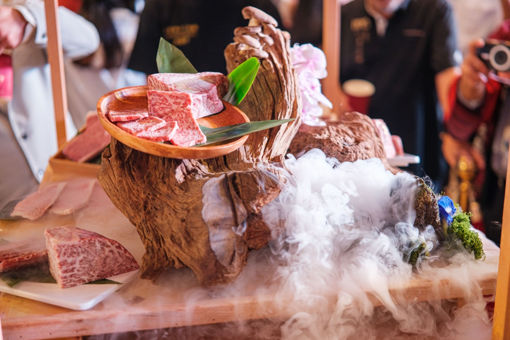
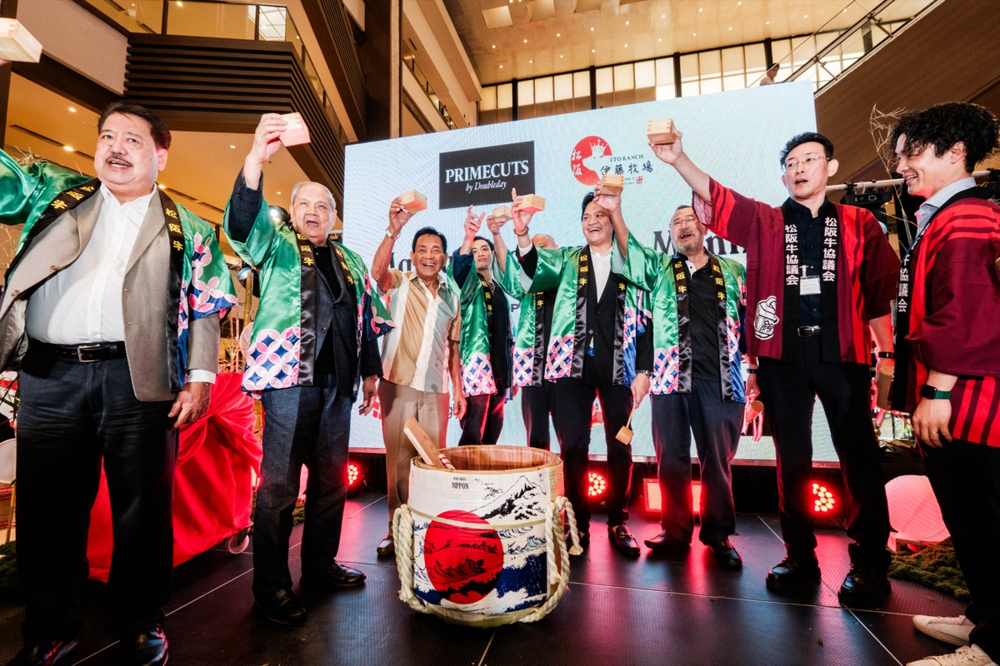
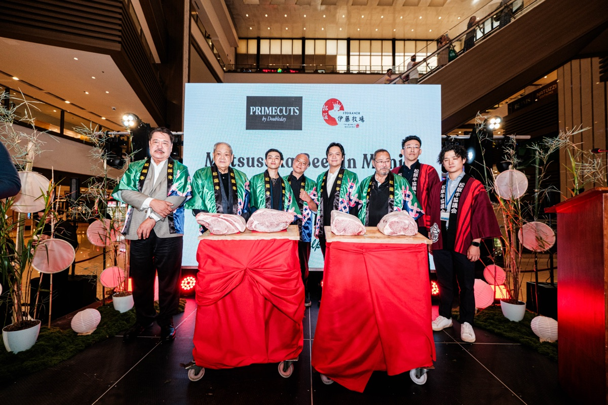

The Queen of Wagyu lands in Manila. 43 placements, 11M audience.
Prime Cuts by Doubleday secured the Philippine import rights to Japan's Ito Ranch Matsusaka Beef, one of the rarest wagyu lines in the world. Our job was to make the launch a national food story, not a private tasting note.
 Prime Cuts by Doubleday, Ito Ranch and Teppanya executives at the kagami biraki sake-barrel breaking, Shangri-La Plaza
Prime Cuts by Doubleday, Ito Ranch and Teppanya executives at the kagami biraki sake-barrel breaking, Shangri-La Plaza
A wagyu nobody had ever tasted, at a price almost nobody would pay.
Matsusaka beef is one of Japan's three legendary wagyu varieties, retailing in the Philippines around ₱23K per kilo, and almost never exported outside Japan. Prime Cuts by Doubleday had secured exclusive Philippine import rights with Ito Ranch — a real business story, but a luxury one, easy to dismiss as "another wagyu launch."
To matter beyond food blogs, the launch needed an angle the news desks would write, a frame the lifestyle press would commit to, and a story consumers would remember even if they would never order it.

"Queen of Wagyu". A real Japanese ceremony. A trade story behind the luxury story.
We anchored the launch around a single hook the press could repeat: "Queen of Wagyu". Underneath it we built a kagami biraki sake-barrel breaking with executives from Doubleday, Ito Ranch and Teppanya, giving every photo desk in the city a visual they could not get elsewhere.
The story had two parallel angles. The first was the food story for lifestyle desks: rarity, flavour, where to eat it. The second was a Philippines × Japan trade story for business desks: exclusive import rights, restaurant-group certification, a new luxury category opening up. Lifestyle and business both got a piece they wanted to write.
- "Queen of Wagyu" as the single repeatable headline frame
- A kagami biraki ceremony that gave press a unique visual on launch day
- Two parallel narratives: food/luxury and Philippines-Japan trade
- Restaurant-partner amplification (Teppanya, Sicilian Roast certified to serve)
GMA, ABS-CBN, Philstar, Rappler, Manila Times, BusinessWorld, Esquire, Lifestyle.INQ.
The launch ran in GMA Network ("One of Japan's most expensive wagyu is now in the Philippines"), ABS-CBN ("Well done, Manila: Japan's Ito Ranch Matsusaka beef is finally here"), Philstar.com ("'Queen of Wagyu' Ito Ranch Matsusaka Beef arrives in Manila"), Rappler ("What is Japan's Matsusaka beef, and why is it so rare?"), The Manila Times ("'Queen of Wagyu' makes her royal entrance in the Philippines"), BusinessWorld ("Matsusaka: This P23k/kilo beef literally melts in your mouth"), Esquire Philippines ("The World's Most Expensive Beef Is Now in the Philippines"), Manila Standard ("Queen of Wagyu arrives in PH"), Lifestyle.INQ ("A taste of Japan in the Philippines"), Lifestyle Asia, Malaya, BusinessMirror (PressReader), LionhearTV, Orange Magazine, Adobo Magazine, plus a tail of 15+ food blogs and creator posts.
43 placements logged, 11M combined audience, 75.2K estimated views, max DA of 89. All measured by CoverageBook.
"Queen of Wagyu" arrives in Manila.
Shangri-La Plaza Grand Atrium. The kagami biraki sake-barrel breaking with Prime Cuts by Doubleday, Ito Ranch and Teppanya executives. Live tasting led by Teppanya and Sicilian Roast.


Queen of Wagyu. Twelve newsrooms. One national launch.
MVR × Prime Cuts by Doubleday · Oct 2025
Coverage
A sample of where the Matsusaka launch ran. Click through and read.
Numbers verified from the Matsusaka Ito Ranch coverage report (CoverageBook, Oct–Nov 2025). Photos courtesy of Prime Cuts by Doubleday.